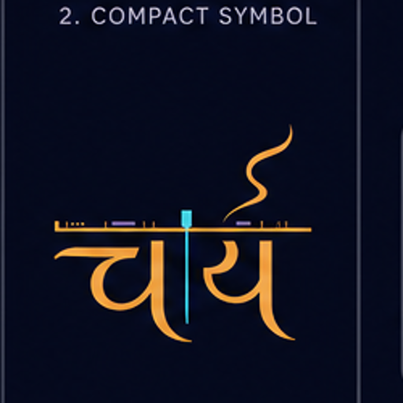
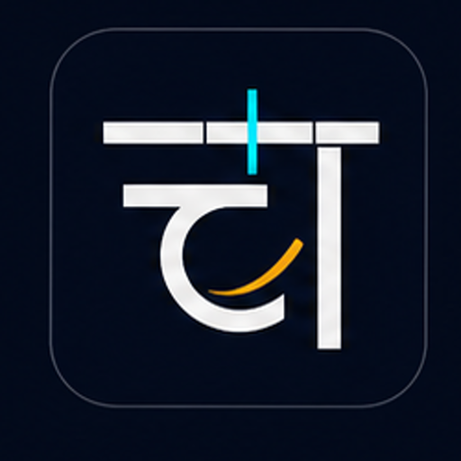
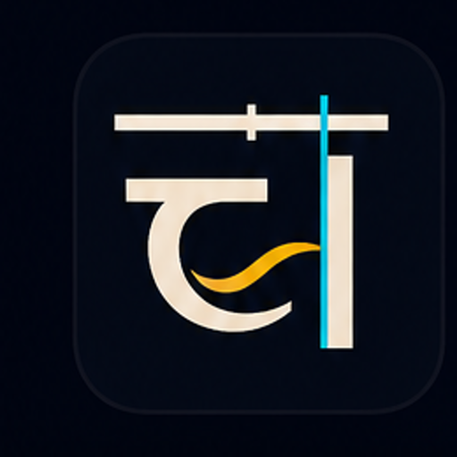

Chai Studio / Brand exploration 04
The Warm Timeline — real UI scale test
Same three placements for every direction: 48px product header, project card, and Dock tile.
01 · Calligraphic
Most expressive, least restrained
SOUL
Application header

Chai Studio
EditInspectMediaDeliver
Project card
Monsoon Film
Edited 3 min ago · 01:42
Dock tile
02 · Geometric
Strongest silhouette at small size
SYSTEM
Application header

Chai Studio
EditInspectMediaDeliver
Project card
Monsoon Film
Edited 3 min ago · 01:42
Dock tile
03 · Balanced hybrid
Warm pulse inside a precise mark
CHAI
Application header

Chai Studio
EditInspectMediaDeliver
Project card
Monsoon Film
Edited 3 min ago · 01:42
Dock tile